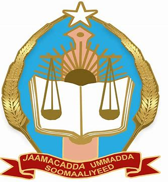

Jaamacadda Ummadda Soomaaliyeed (JUS) waa jaamacaddii ugu horreysay ee dowladeed ee laga aasaaso Soomaaliya. Waxaa la dhisay sanadkii 1954 xilligii ay Soomaaliya ku jirtay marxaladihii hore ee xornimada. Jaamacaddu waxay ahayd xarunta ugu weyn ee waxbarashada sare ee dalka, waxaana ay door muhiim ah ka qaadatay tababarka iyo soo saarista aqoonyahanno Soomaaliyeed.
Markii la aas-aasay, JUS waxa ay bilowday in ay siiso tababar iyo waxbarasho heer jaamacadeed ah ardayda Soomaaliyeed, iyadoo caawimaad ka helaysay dowlado dibadeed sida Talyaaniga iyo Ruushka. Dhammaan wasaaradaha dowladda dhexe ee xilligaas waxay shaqaaleheeda ka heleen JUS.
Intii uu jiray dagaalkii sokeeye ee qarxay 1991, JUS waxay wajahday burbur baaxad leh. Waxaa la xiray muddo dheer, hase yeeshee kadib 2014, dowladda Federaalka Soomaaliya waxay bilowday dib u howlgalinta iyo dayactirka jaamacadda si ay mar kale uga mid noqoto jaamacadaha firfircoon ee dalka.
Jaamacaddu waxay ka kooban tahay kulliyado badan oo bixiya barnaamijyo kala duwan:
JUS waxay leedahay campus-yo badan oo ku kala yaalla Muqdisho:
Jaamacadda Ummadda Soomaaliyeed waa tiir muhiim u ah dib u dhiska iyo horumarinta waxbarashada sare ee dalka. Inkastoo ay soo martay marxalado adag, haddana waxay dib ugu soo noqotay sidii ay u noqon lahayd jaamacad qaran oo la isku halleyn karo.